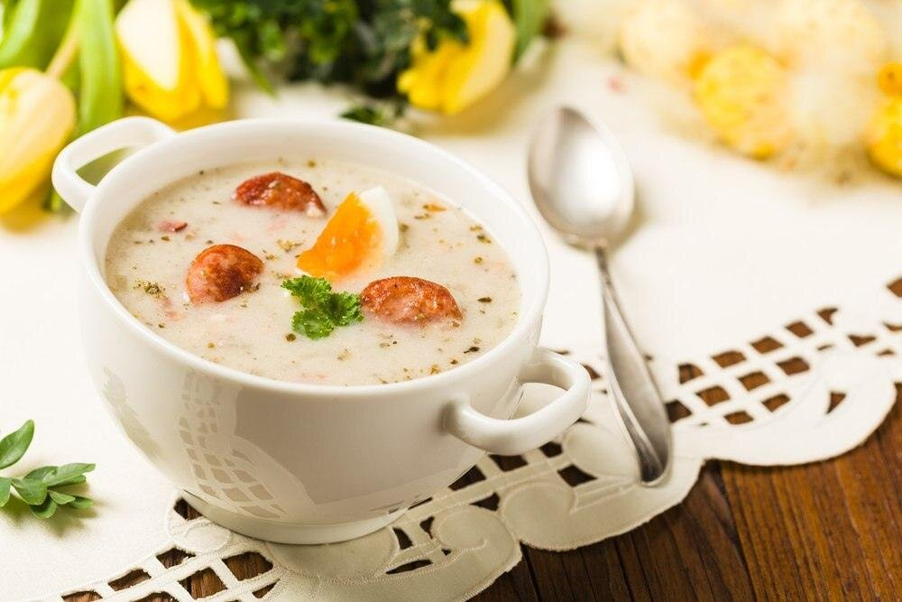
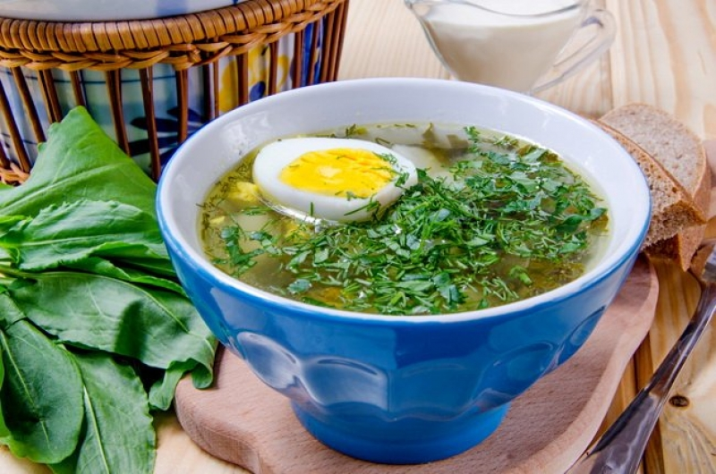
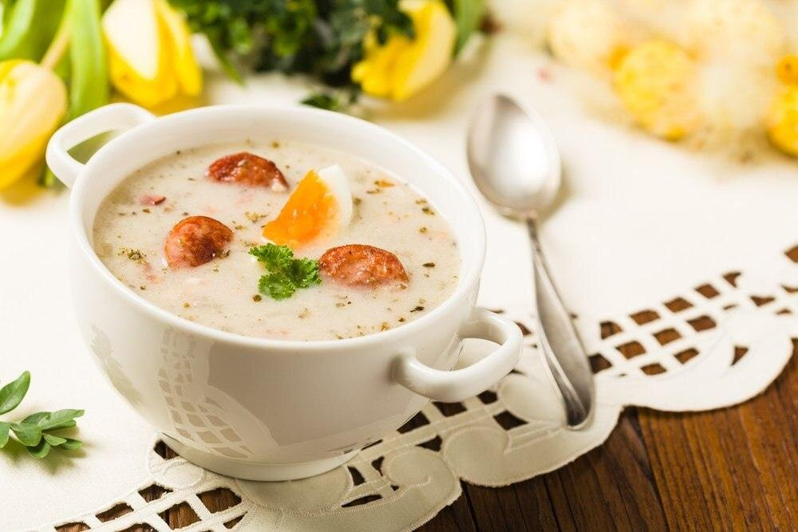
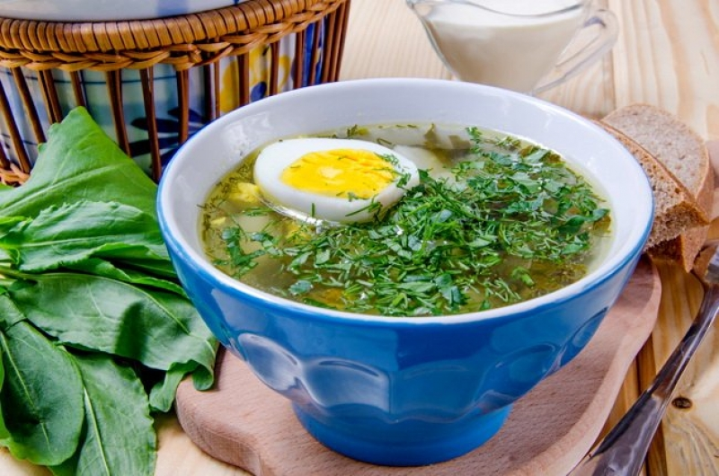

Борщ — горячий заправочный суп на основе свёклы, которая придаёт ему характерный красный цвет.
В словаре В. И. Даля — род щей, похлёбка из квашеной свёклы, на говядине и свинине, или со свиным салом.
Традиционное блюдо восточных славян, основное первое блюдо украинской кухни и национальное украинское
блюдо.
Разновидностей борща много: от традиционного с мясом до вегетарианского и постного с черносливом.
Универсальный рецепт борща определить сложно. Однако его виды можно поделить на горячие и холодные и
различать по цветам.
Горячий или красный борщ — плотный, готовят осенью и зимой. Основа — говяжий бульон, кроме свеклы в нем
также капуста, морковь, картошка, лук. Холодный борщ делают на свекле и кефире с добавлением свежих
огурцов, зелени и яиц. Этот освежающий легкий вариант хорош в жаркое время.
В зависимости от рецепта выделяют такие виды борща:
 


